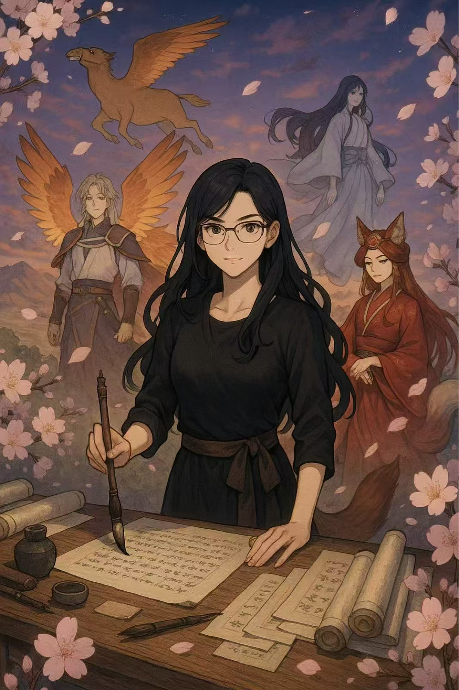

Scholar • Writer • Mythmaker
Qianyi Iris Ma
Chinese myth studies · Transpacific Anglophone writing · Women’s speculative fiction · AI & humanities
Scroll
↓
Chinese myth studies · Transpacific Anglophone writing · Women’s speculative fiction · AI & humanities

PhD Candidate @ CUHK
Visiting Researcher @ UCLA (2025–26)
MFA @ CalArts
I’m Qianyi Iris Ma, a writer and scholar orbiting between Hong Kong, Los Angeles, and imaginary worlds.
I study how Chinese myths and folklore shapeshift in contemporary Anglophone fiction—especially stories of “shapeshifting heroines” who cross borders between girl, ghost, goddess, and monster.
I am currently completing a PhD in English Literary Studies at the Chinese University of Hong Kong, with a dissertation titled Negotiating the Unhomed Shapeshifting Chinese Heroines.
Alongside the dissertation, I’m writing a novella titled Ghost Goddesses and developing a second research stream on AI and the humanities.
(+852) 5261 4892
qianyima@link.cuhk.edu.hk
linkedin.com/in/qianyi-ma
ORCID: 0009-0003-9740-2910
Research Interests
Chinese myth studies; Asian American and diasporic Chinese narratives; women’s speculative fiction; mythological retellings; transpacific Anglophone Chinese writing; creative writing (fiction); AI and humanities.
Doctor of Philosophy (PhD), English – Literary Studies | GPA: 4.0/4.0
Supervisors: Eddie Tay and Joanna Mansbridge
Dissertation: Negotiating the Unhomed Shapeshifting Chinese Heroines
Master of Fine Arts (MFA), Creative Writing | GPA: 4.0/4.0
Supervisor: Brian Evenson
Bachelor of Arts (BA), Broadcast Journalism | GPA: 3.8/4.0
qianyima@link.cuhk.edu.hk